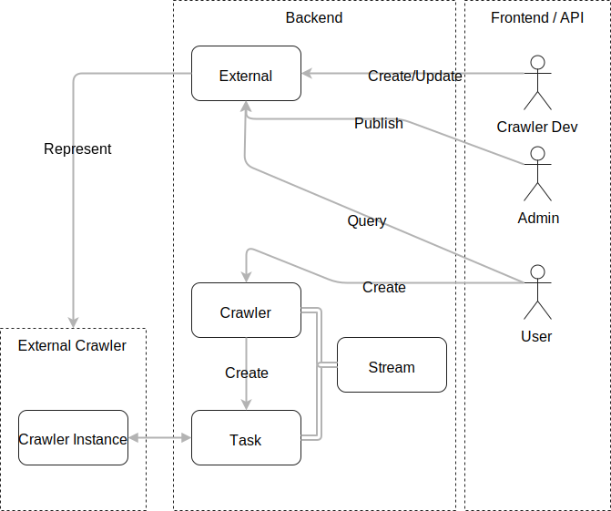
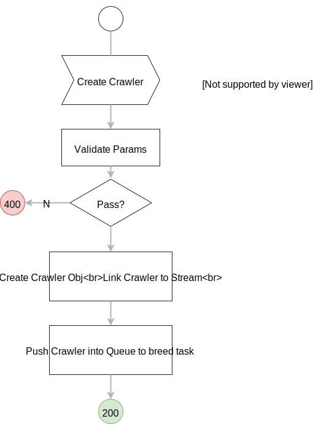
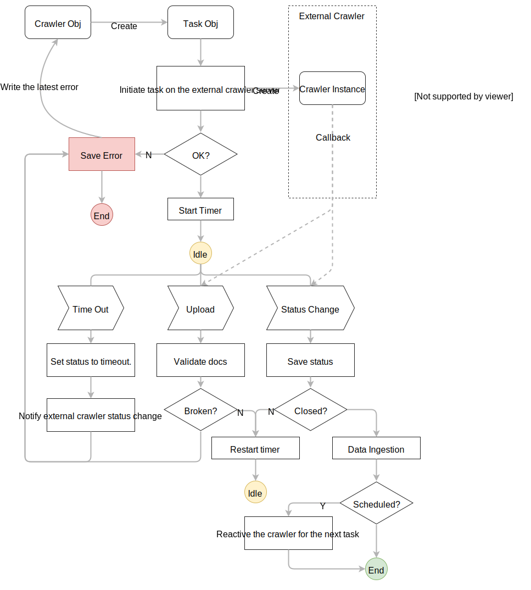
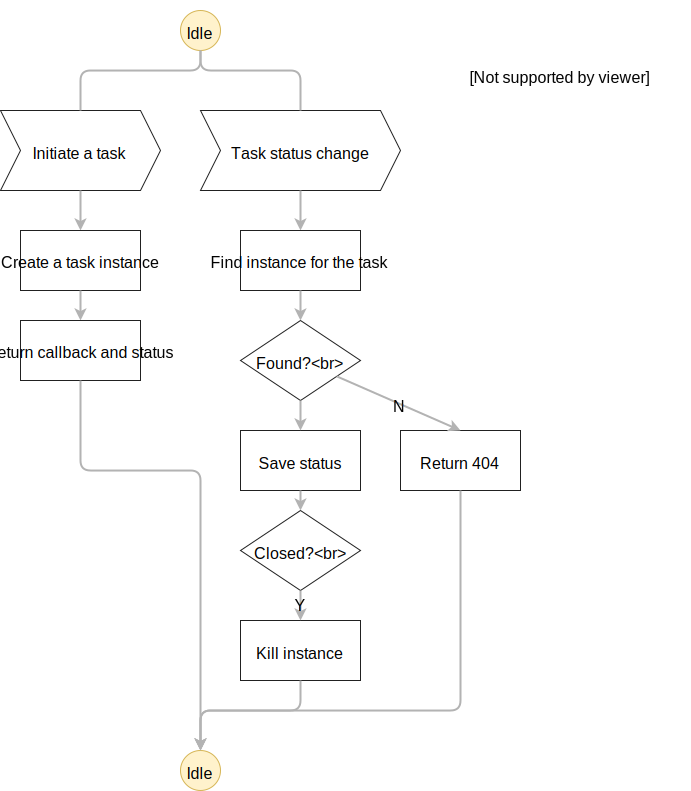
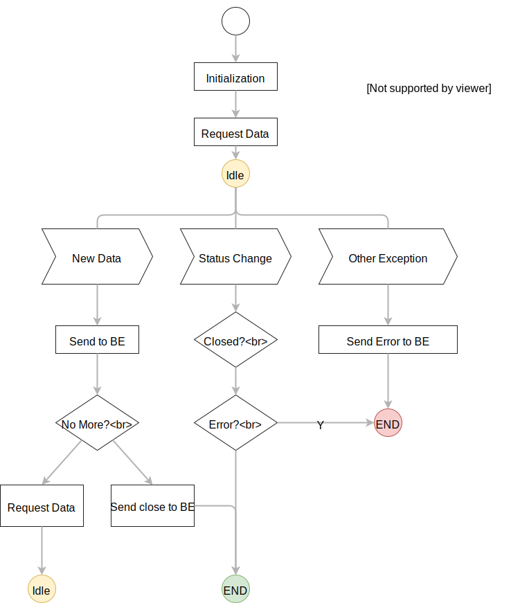
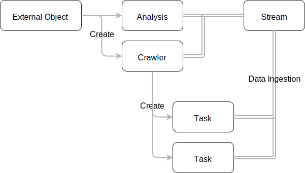

Introduction
Stratifyd External Crawler Document ( Draft-1 for internal development use )
Roadmap
Stage 0
Restore the exiting crawler working under the old framework. For demo and Live Person.
- Use the
/externalcall to create crawler object and analysis. - The crawler object keep the parameters and credential. It push data directly to the stream.
Stage 1
Implement the external crawler protocol. Have the data ingestion workflow ready.
- Replace
/externalcall with external object. - Use
/action/externals/{fid}to create crawler object and analysis. - Crawler objects breed task objects to get data from external crawler server.
- Each task object clone the parameters from the crawler object, and send them to external server with credentials from the same crawler object. It doesn't keep credential.
- Task object is a change set. It ingests the data to the stream once it's linked to the stream. User can remove the data by deleting task object.
Stage 2
Implement admin management feature. Implement JSON Schema validation to enable BE detect crawler malfunction.
- Validate docs in each upload with JSON schema.
- The subdomain admin can publish a specific version of a crawler.
- The crawler dev has a developing version only accessible to himself.
External Crawler

External crawler (EC) is a HTTPS server to crawl data from a certain data source and send to Stratifyd backend (BE). EC exposes a set of REST API to communicate with BE. EC writes back data and updates task status throught REST API on BE. Users can start a new task through Stratifyd frontend (FE).
External crawler developer (Dev) is responsible to register/update the external object (EObj) on BE. Subdomain admin is responsible to publish a specific version of the crawler.

The front end user is responsible to grant access and fill necessary parameters to start the crawler.

BE is responsible to delegate the task request to EC, receive upload from EC, monitor task status change, post notification to FE.
External Crawler Server

Task

EC is responsible to maintain a crawler for each running task on the BE. Each task has a set of parameters, a credential and a status.
The credential contains either an OAuth field or a pair of user/password.
| Credential | Meaning |
|---|---|
| oauth | OAuth credential |
| user | User id |
| password | Password |
The status should contains code, message and an optional detail
| Status | Meaning |
|---|---|
| code | Status code |
| message | Human readable message |
| detail | Other details for debugging |
| Status Code | Meaning |
|---|---|
| 0 | New |
| 102 | Running |
| 200 | Done |
| 408 | Timeout |
| 500 | Internal Error |
Start a New Task
The BE send all the parameters necessary to create a new task. The EC returns a callback url for this new task. The EC is also resposible to keep the task id for further operations.
POST /task?version={external_crawler_version}
# need python example
$.post(`${EC_end_point}/task?version=${external_crawler_version}`, {
fid: `task_object_id`,
params: {
/* all necessary parameters */
},
credential: {
oauth: {
expiry: 'expiry_date',
issued: 'token_issue_date',
user: 'user_id',
reported_name: 'user_display_name'
email_address: 'user_email'
}
}
}, function(json) {
var payload = json.payload
var callback = payload.callback;
var status = payload.status; // the current status
// keep the callback for further operation
})
The post body contains the following values.
| Field | Meaning |
|---|---|
| fid | Task id. EC should keep it until the task is closed. |
| params | Parameters to start the task. FE generates a UI according to the parameters registered in the external object. The user is resposible to fill the params. |
| credential | An optional object containing user credential. It contains either oauth or user & password. It may contains other custom fields (eg. Foresee, Survey Monkey). OAuth is recommended for a securied access. The EC should not keep the credential for other tasks. |
| endpoint | The endpoint url for the crawler to upload and change task status |
The response should follow the standard payload format. EC should generate a callback url for further operations.
| Field | Meaning |
|---|---|
| callback | The callback url to notify the status change |
| status | The current status of the task on EC |
Notify Task Change
The BE sends the status change through the callback it received from the new task call.
It's recommended to reuse the /task call.
PATCH /task/{taskId}/status?version={external_crawler_version}
# need python example
$.patch(`${EC_end_point}/task/${taskId}/status?version=${external_crawler_version}`, {
code: 408,
message: 'Task is timeout',
}, function(json) {
// recycle the resource
})
The post body
| Field | Meaning |
|---|---|
| code | Status change |
| message | Message for human's eyes |
| detail | Extra message ( eg. exception detail ) for debuging |
OAuth Support
External crawler server can support OAuth buy putting a endpoint url in the external object oauth field. EC server is responsible to keep tokens. And clear the token after it receive a clear request.
The endpoint gets a uuid (user id) and subdomain from the FE in the url params.
| OAuth Params | Meaning |
|---|---|
| uuid | Backend user id |
| subdomain | Subdomain for the current FE |
| reset | Force reset the existing token. Set this to 1 when user want to swtich to another account. |
The OAuth endpoint has to support the following calls.
Login
GET {oauth_end_point}/login?uuid={uuid}&subdomain={subdomain}&reset={reset}
// pop up a oauth window
var win = window.open( `${oauth_end_point}/login?uuid=${uuid}&subdomain=${subdomain}&reset=0`,
'ConnectWithOAuth',
'location=0,status=0,width=640,height=440' );
var testInterval = window.setInterval(function(){
if( win && win.closed ) {
thirdPartyToken(party, current_uuid, callback, true);
window.clearInterval(testInterval);
} else {
// something wrong within the oauth window
}
}, 500);
The FE pop up a window for the OAuth request. User will be redirected to thirdparty authentication page and complete the oauth. When the OAuth is completed, the thirdparty page should redirect itself to EC server. Then the EC server return a HTML page with a <script>window.close()</script> to close the popup window.
The user may abort the OAuth by closing the popup window anytime.
Get Token
GET {oauth_end_point}/token?uuid={uuid}&subdomain={subdomain}
$.get(`${oauth_end_point}/token?uuid=${uuid}&subdomain=${subdomain}`, function(oauth){
/*
the oauth should has user, expiry, issued, token
*/
// must have
var { user, expiry, issued, token } = oauth;
// optional
var { reported_name, email_address } = oauth;
// the FE will put this into crawler object
}).fail(function(jqxhr,textStatus,error){
// oauth failed
if( jqxhr.status === 404 ) {
// token doesn't exist
}
})
OAuth should looks like
{
"expiry": "expiry_date",
"issued": "token_issue_date",
"user": "user_id",
"token": "token",
"reported_name": "user_display_name",
"email_address": "user_email"
}
| OAuth Field | Meaning |
|---|---|
| user | Third-party service user id. ( It's not the BE user id ) |
| token | Token |
| expiry | Token expiry timestamp |
| issued | Token issue timestamp |
| Optional Result | Meaning |
|---|---|
| reported_name | User display name |
| email_address | User email |
Clear Token
DELETE {oauth_end_point}/token?uuid={uuid}&subdomain={subdomain}
The EC server should not keep the token after clear call
// clear the token
$.delete(`${oauth_end_point}/token?uuid=${uuid}&subdomain=${subdomain}`,(json)=>{
$.get(`${oauth_end_point}/token?uuid=${uuid}&subdomain=${subdomain}`,()=>{
assert( false, 'the ES server should return 404 after the delete call'.
}).fail((jqxhr)=>{
assert( jqxhr.status === 404, 'the EC server should return 404 after the delete call' )
}
})
Backend Server
BE exposes task object to the external crawler server.
- Upload data through
POST /actions/tasks/{task_id}/upload. - Notify task status change throuhg
POST /actions/tasks/{task_id}/status
External Object
External object is a relational object representing a resigtered crawler on the backend.
Create/Update an External Object
POST /externals
PATCH /externals/{fid}
APIPost( `/externals`, {
meta: {
name: 'display name',
image: 'url to your icon',
description: 'bla bla bla'
},
parameters: [
/*parameter list*/
],
crendential: {
oauth: 'https://my_oauth_callback',
},
analysis: { /* analysis prototype */ }
},(json) => {
var { payload } = json;
var { meta } = payload;
var { fid, version }
/*
Keep the fid and version.
The fid is the unique id to indetify your crawler on BE.
The BE will send the version to the external server in the url parameter.
The version number get increased everytime the dev changes the external object.
*/
})
The fid is the unique id to indetify your crawler on BE. The BE will send the version to the external server in the url parameter. The version number get increased everytime the dev changes the external object.
| Fields | Meaning |
|---|---|
| meta | Name, image, description |
| endpoint | A REST API end point. eg. https://excrawler.stratifyd.com |
| credential | Credential requirement. It can be undefined, 'basic' or 'oauth'. |
| oauth | A callback url to trigger OAuth procedure. This will be opened in a popup browser window. |
| oauthParameters | Parameters required for OAuth. These params will be append to the oauth callback url. |
| schema | A JSON schema to validate the doc in upload request |
| docIdField | The field name used as unique doc id. The BE generate the id by the content of the doc when the field is missing. |
| headers | Custom headers for HTTP requests from BE to EC |
| parameters | Task parameter list |
| analysis | Analysis prototype |
Parameter
FE generates UI according to the parameter list.
| Field | Meaning |
|---|---|
| name | Key of the parameter |
| display_name | Name on the UI |
| description | Description |
| req | Is required or not, boolean |
| type | string, password, bool, date, location, multi_bool, list, multi_search, interger |
| min | Minimum value, only legit for numerical type |
| max | Maximum value, only legit for numerical type |
| options | Option list for list |
| restrictions | List fo restriction rule. Use this to compare values. |
Restriction Rule
[
{
display_name: 'Start Time',
description: "Select data after this time.",
type:"date",
name:"date_range_start",
restrictions: [
{
rule: 'lt',
target: "date_range_end",
message: "Must be earlier than the end time"
}
]
},
{
display_name: 'End Time',
description: "Select data before this time.",
type:"date",
name:"date_range_end",
restrictions: [
{
rule: 'gt',
target: "date_range_start",
message: "Must be later than the start time"
}
]
}
]
| Field | Meaning |
|---|---|
| rule | gt, gte, lt, lte, eq |
| target | compare with this param |
| message | Error message when the comparison fails |
Create a Crawler for a Stream
POST /actions/externals/{fid}/crawler
APIPost( `/actions/externals/${fid}/crawler`, {
meta: {
links: [{
from: { type: 'streams', fid: stream_id } // there should be one and only one stream
}]
},
params: {
/*param dict here*/
},
crendential: {
oauth: {
/* oauth here */
}
}
},(json) => {
var { payload } = json;
var { crawler, analysis } = payload;
// get one crawler object and one analysis object
})

The crawler action creates a crawler and a predefined analysis, links them to a stream.
Crawler Object
Crawler object is a relational object representing a external crawler setting on the backend. A one time crawler breeds a task object. A scheduled crawler breeds multiple task objects sequentially.
First the FE has to get the right external object. Has the user complete credential and parameter list.
Then the user start a crawler by creating a crawler object.
A stream can has only one crawler object linked. And a crawler can has only one stream linked to itself.
Create a Crawler
Use POST /actions/externals/{fid}/crawler
FE should not create a crawler without external object.
Start a New Task
POST /actions/crawlers/{fid}/task
// in the FE
APIPost( '/actions/crawlers/${fid}/task', {
params: { /* override params if necessary */ }
}, (json, status, xhr ) => {
if( jqxhr.status === 208 ) {
// there is a running task
}
})
The task import params and credential from the crawler and send them to external server. It merges the params in the post body with the params from crawler.
Return 208 if there is a running task for the crawler
Retry a Task
POST /actions/crawlers/{fid}/task/${task_fid}
Task Object
Task object is a relational object representing a crawler task on the backend. It is also a change set to the stream. When the user delete the task, he removes the docs from the stream as well.
Create Task
Use POST /actions/crawlers/{fid}/task
FE should not create a task without crawler object.
Delete Task
DELETE /actions/tasks/{fid}
Stop the task and remove the doc from the stream.
Retry Task
Use POST /actions/crawlers/{fid}/task/${task_fid}
Upload Data
The EC post data to the BE in Newline Delimited JSON
Content type application/x-ndjson.
Each doc is a JSON dictionary. Escape each new line char for string values.
Docs are joined with CR. So that the FE can post with gzipped stream.
POST /actions/tasks/{task_id}/upload
# need python example
// on the external crawler side
$.post(`/actions/tasks/${task_id}/upload`,
docs.map(function(d){
return JSON.stringify(d,function(key,value){
if( typeof(value) === 'string' ) {
return string.replace(/\n/g,' '); // escape or replace CR.
}
});
}).join('\n'), function(result) {
// OK
}).fail(function(jqxhr) {
switch( jqxhr.status ) {
case 400:
// broken post body
break;
case 406:
// doc is invalid
break;
}
});
Change Status
The EC can close the task or report any status change. The status change also reflected in the stream linked to task.
POST /actions/tasks/{task_id}/status
# need python example
// on the external crawler side
$.post(`/actions/tasks/${task_id}/status`,
{
code: 200,
message: 'task done'
}), function(result) {
// OK
}).fail(function(jqxhr) {
switch( jqxhr.status ) {
case 400:
// broken post body
break;
case 404:
// task is not found
break;
}
});
The post body
| Field | Meaning |
|---|---|
| code | Status change |
| message | Message for human's eyes |
| detail | Extra message ( eg. exception detail ) for debuging |
Relational Object
Relational object is the fundament of the backend system. Most of the handlers are relational objects.
Create
Create a relational object of specific type. The object is initialized with the JSON in the post body.
POST /{type}
# need python example
Signals.APIPost( '/analyses/',
{
"meta": {
"name": "Object Name",
"links": [{"from": {"type":"stream","fid":"xxxxxxx"}}]
},
"params": { /*others*/ }
}, callback
);
Patch
Recursively replace the value in the object by keyword.
PATCH /{type}/{fid}
# need python example
Signals.APIPatch( `/analyses/${fid}`,
{
"meta": {
"name": "new name"
}
},callback
);
Overwite
Complete overwrite the existing object. meta.links doesn't work in this call.
PUT /{type}/{fid}
# need python example
Signals.APIPut( `/analyses/${fid}`,
{
"meta": {
"name": "new name"
}
},callback
);
Delete
Delete an existing relational object.
DELETE /{type}/{fid}
# need python example
Signals.APIDelete( `/analyses/${fid}`, undefined, callback };
Actions
There are actions calls for specific purpose. Each type has a different set of actions.
For example
POST /actions/models/${fid}/train
Authentication
To authorize, use this code:
// get API Key
# With shell, you can just pass the correct header with each request
curl "{end_point}/user/apikey"
// import signals api
var Signals = require('signals-api').Signals;
// load your credential
var kAPPCredential = require('./appCredential');
// if region is undefined, then it is defaulted to en
// you can replace it with cn cn-2
var region = 'en'
var api = Signals(kAPPCredential,'en');
// do something with the api ...
Make sure to replace
end_pointwith your API key.
You can find your API key on the /explorer.html?mode=setting or GET through /user/apikey
Errors
The Kittn API uses the following error codes:
| Error Code | Meaning |
|---|---|
| 400 | Bad Request -- Your request is invalid. |
| 401 | Unauthorized -- Your API key is wrong. |
| 403 | Forbidden -- The kitten requested is hidden for administrators only. |
| 404 | Not Found -- The specified kitten could not be found. |
| 405 | Method Not Allowed -- You tried to access a kitten with an invalid method. |
| 406 | Not Acceptable -- You requested a format that isn't json. |
| 410 | Gone -- The kitten requested has been removed from our servers. |
| 418 | I'm a teapot. |
| 429 | Too Many Requests -- You're requesting too many kittens! Slow down! |
| 500 | Internal Server Error -- We had a problem with our server. Try again later. |
| 503 | Service Unavailable -- We're temporarily offline for maintenance. Please try again later. |
How to Test
External Crawler Test Server
- Pull https://github.com/Stratifyd/excrawler_doc
- Goto
test/excrawler - run
npm install - run
npm run start - open the server page for more detail
git pull https://github.com/Stratifyd/excrawler_doc
cd excrawler_doc/test/excrawler
npm install
npm run start